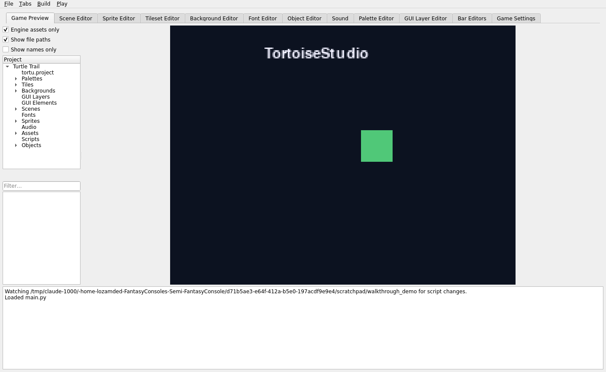
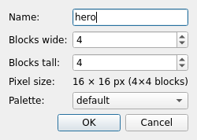
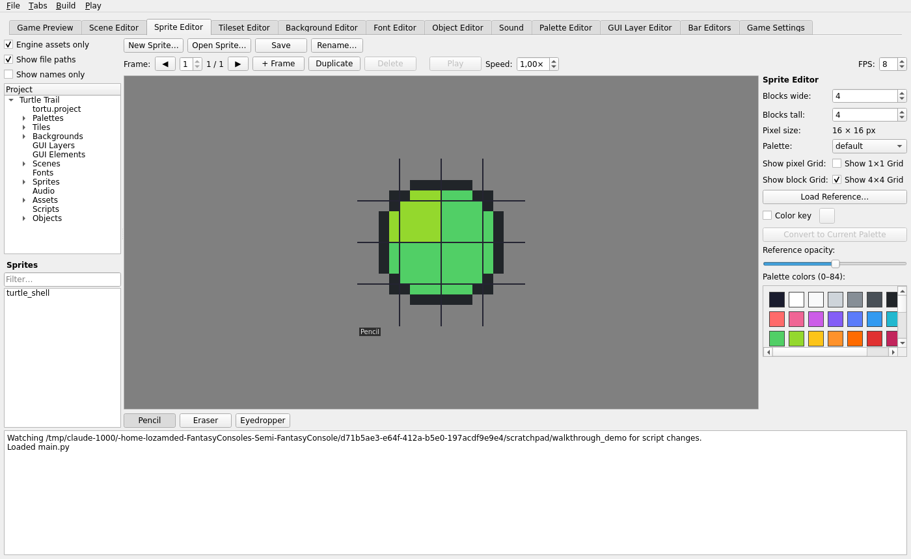
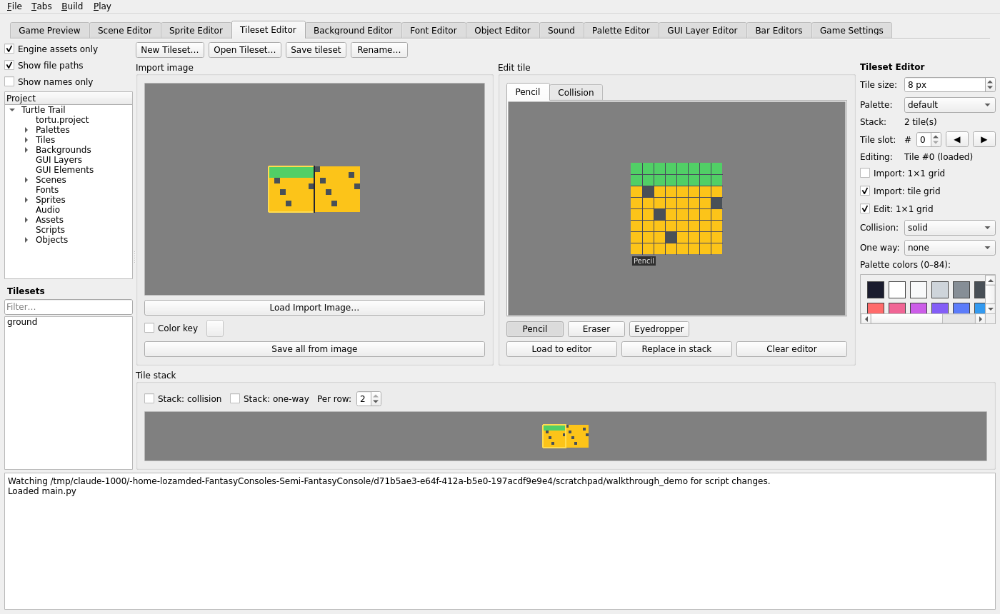
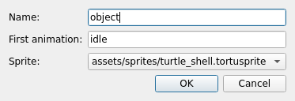
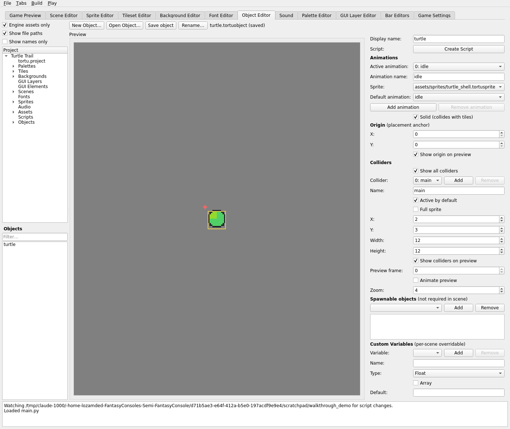
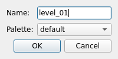
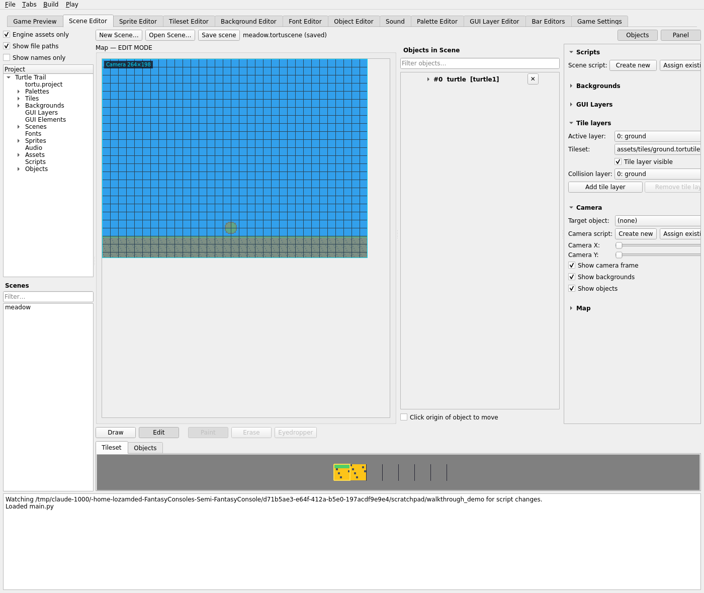
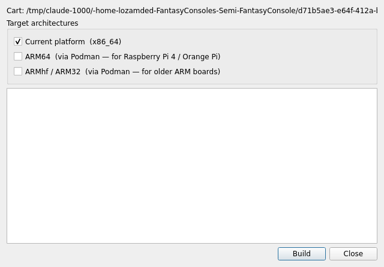

Walkthrough: Build Your First Scene
Every screenshot below is the real TortoiseStudio UI, captured from an actual run — a new project, a hand-drawn sprite, a tileset, an object, and a scene, built from nothing.
1. Create the project
File → New Project… only asks where to put it — no setup wizard. It scaffolds the folder structure,
writes a starter main.py (a bouncing rectangle and the TortoiseStudio wordmark), and opens
straight into the Game Preview tab:

Game Preview tab immediately after File → New Project…, running the default main.py stub.
See Overview & workflow for what every part of this window does.
2. Draw a sprite
Sprite Editor → New Sprite… asks for a name, size in 4px blocks, and a palette:

New Sprite… — sizes are authored in 4px blocks, not raw pixels.
A fresh sprite starts fully transparent. Painting with Pencil/Eraser/Eyedropper (right-click cycles between them) against the palette swatch grid produces something like this — a small round "shell" icon:

The finished 16×16 sprite — block grid on, palette swatches on the right pick the pencil color.
Full editor reference: Sprite, tileset & background.
3. Build a tileset
Same idea for ground tiles — paint a tile, set its collision, commit it to the stack, repeat:

Two tiles committed to the stack — collision is set per-tile via the Collision tab, independent of the pixel art.
Note the Collision: solid field on the right — this is what makes the ground actually stop the player at runtime, entirely separate from how the tile looks. See Sprites & tilesets for the full collision-type/one-way model.
4. Make an object from the sprite
Object Editor → New Object… picks a name, a first animation name, and which sprite to use:

New Object… — every object needs at least one animation right away.
The origin (yellow crosshair) and collider box are dragged directly on the preview canvas, not just typed as numbers:

Origin crosshair and collider box, both draggable on the canvas — X/Y/Width/Height on the right stay in sync.
Full field reference: Object & scene editors.
5. Place it in a scene
New Scene… just needs a name and palette:

New Scene… — everything else (tile layers, backgrounds, objects) is added from inside the editor.
From here: assign the tileset to the ground tile layer, paint a strip of ground tiles across the bottom, add a sky-blue background layer, and drop the object onto the map (dragged straight from the project tree, or placed via the Objects tab below the canvas):

A complete (tiny) scene: background, tile ground, and one placed object — visible both on the map and in the Objects in Scene list on the right.
Full side-panel reference: Object & scene editors.
6. Ready to build
Once a project has a start scene set (Game Settings tab), Build → Export .tortucart…
packages it, and Build → Build Executable… opens this dialog to produce a standalone
binary — here, on a host that already has Podman, passt, and QEMU installed, so both ARM
targets are available:

Build Executable… — ARM64/ARMhf are enabled here because this host already has the cross-compile toolchain set up (see Install on an SBC).
Full build reference: Build & test, and what to do with the result: Install on an SBC.